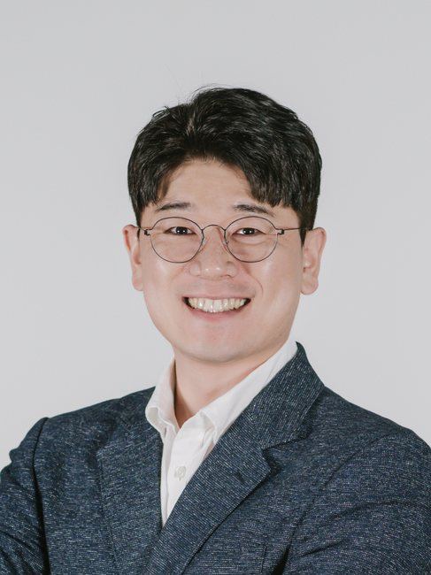
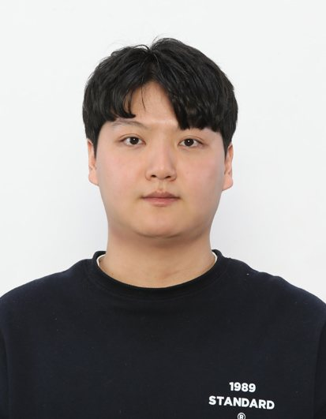
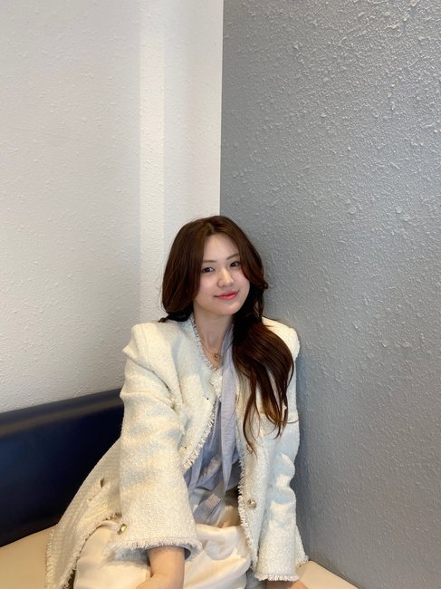
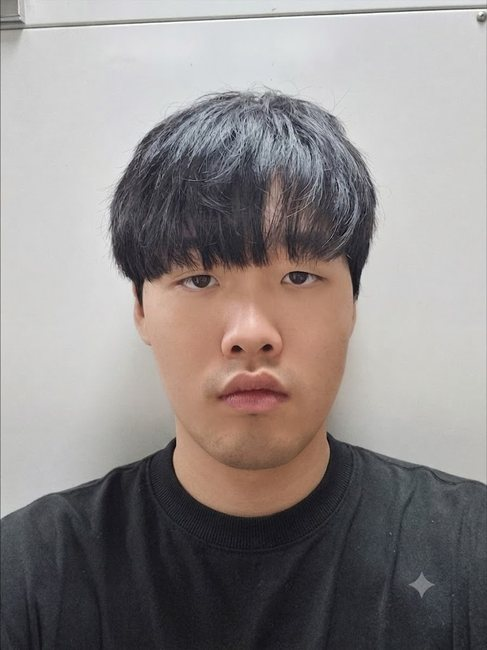
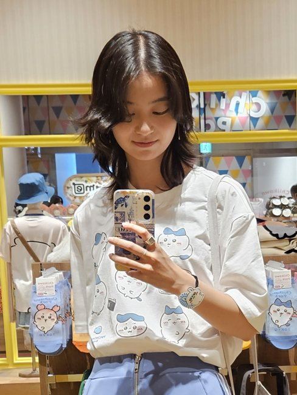
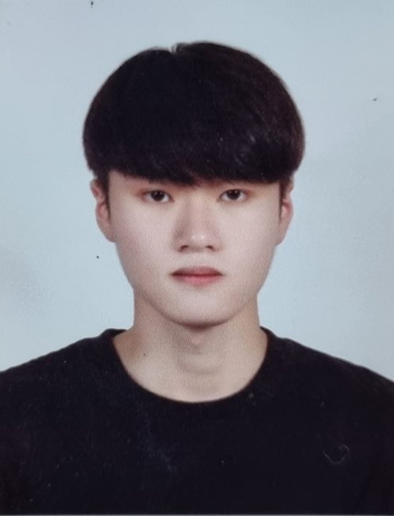

People (구성원)
Principal Investigator

김동흔
Donghun Kim, Ph.D. · Associate Professor
매개충 분자생리학을 전공하였으며, 참진드기의 흡혈 조절 기전과 신경내분비 신호전달을 중심으로 연구하고 있습니다. 급속흡혈기 큐티클 팽창의 분자 기전을 규명하고, 이를 차세대 살비제 표적 발굴로 연결하는 연구를 수행합니다.
Education 학력
- 2011 – 2016
- Ph.D., Entomology, Kansas State University, Manhattan, KS, USA (Advisor: Dr. Yoonseong Park)
- 2008 – 2011
- Doctoral course, Entomology, Texas A&M University, College Station, TX, USA (Advisor: Dr. Patricia Pietrantonio)
- 2008
- M.S., Agricultural Biology, Kyungpook National University, S. Korea (Advisor: Dr. Kyungyeoll Lee)
- 2005
- B.S., Agricultural Biology, Kyungpook National University, S. Korea
Professional Appointments 경력
- 2023 – Present
- Associate Professor, Department of Entomology, Kyungpook National University, Sangju, Korea
- 2018 – 2023
- Assistant Professor, Department of Entomology, Kyungpook National University, Sangju, Korea
- 2017 – 2018
- Postdoctoral Scholar, Entomology, Pennsylvania State University, University Park, PA, USA (PI: Dr. Jason Rasgon)
- 2016 – 2017
- Postdoctoral Scholar, Entomology, Kansas State University, Manhattan, KS, USA (PI: Dr. Yoonseong Park)
Editorial & Contact 학술 활동 · 연락처
- 학술 활동
- Journal of Asia-Pacific Entomology (Insect Physiology) Associate Editor
Entomological Research Associate Editor - 연락처
- dklome2018@knu.ac.kr · 054-530-1214
연구원
Graduate & Undergraduate Researchers
대학원생 Graduate Researchers

김지석
Jiseok Kim · Ph.D. Course
- 학력
- BS 경북대학교 생태환경대학 생물응용전공
MS 경북대학교 생태환경대학 질병매개곤충학과 - 연구 주제
- 작은소피참진드기 매개 병원체 보균 특성 및 주요 숙주 규명
- 국내 침입 외래 해충 대상 원산지 및 유입경로 규명
- eDNA 기반 외래 해충 발생 예찰 시스템 구축

황서율
Seoyul Hwang · Ph.D. Course
- 학력
- BS 경북대학교 생태환경대학 생물응용전공
MS 경북대학교 생태환경대학 질병매개곤충학과 - 연구 주제
- 작은소피참진드기 급속흡혈기 큐티클 팽창 조절 도파민 · 옥토파민 수용체 신호 네트워크 규명
- 참진드기 급속흡혈기 큐티클 팽창 조절 생체아민–호르몬 이중 신호 축 작용 기전 규명
- 주요 농업해충 약제 저항성 모니터링 및 현장 맞춤형 관리 데이터베이스 구축

박재욱
Jaeuk Park · MS–Ph.D. Integrated
- 학력
- BS 경북대학교 생태환경대학 생물응용전공
- 연구 주제
- 작은소피참진드기 급속흡혈 개시인자 및 개시 기작 구명
학부연구생 Undergraduate Researchers

차은서
Eunseo Cha · Undergraduate
- 학력
- BS 경북대학교 생태환경대학 말/특수동물학과
- 연구 주제
- 주요 농업해충 약제 저항성 모니터링 및 현장 맞춤형 관리 데이터베이스 구축

신현준
Hyunjun Shin · Undergraduate
- 학력
- BS 경북대학교 생태환경대학 곤충생명과학과
- 연구 주제
- 주요 농업해충 약제 저항성 모니터링 및 현장 맞춤형 관리 데이터베이스 구축
수상 경력
Awards
지도교수 FACULTY ACHIEVEMENTS
- 교육 · 강의 — 경북대학교 우수 강의상 수상 (2024)
- 학생 연구지도 — 국가 · 기관 연구 지원사업 지도 2건 (박사과정생 연구장려금, 해외연수 지원사업)
- 국내 · 외 학술대회 학생 수상 지도 15건
대학원생 STUDENT ACHIEVEMENTS
- 국가 · 기관 연구 지원사업 선정경북대학교 ‘대학원생 해외연수 지원사업’ — 황서율 (2026)
- 교육부–한국연구재단 ‘박사과정생 연구장려금 지원사업’ — 황서율 (2025)
국제 및 국내 학술대회 수상
| 학회 | 수상 내역 | 수상자 및 연도 |
|---|---|---|
| Entomological Society of America | Student Competition · 최우수상 | 황서율 (2024, 2022) |
| Student Competition · 우수상 | 김지석 · 황서율 (2025) | |
| 한국응용곤충학회 | 구두발표 최우수상 | 황서율 (2022–2025) · 구경모 (2023) |
| 구두발표 우수상 | 김지석 (2025, 2022) · 이가령 (2023) | |
| 포스터발표 우수상 | 김지석 (2025) | |
| 한국환경생물학회 | 구두발표 장려상 | 이가령 (2023) · 김지석 · 황서율 (2022) |
연구원 모집
Join Us
매개충 분자생리학, 기능유전체학, 분자진단 및 AI 기반 동정 기술에 관심 있는 학부 연구생과 대학원생을 상시 모집합니다. 실험 경험은 요구하지 않으며, 연구 주제에 대한 지속적 관심과 정량적 사고를 가장 중요하게 봅니다.
진행 중인 국제공동연구 과제를 통해 체코 기생충학연구소와 프랑스 UMR-BIPAR에서의 공동 실험, 국제학술대회 참가 기회가 열려 있습니다. 관심 있는 분은 이메일로 문의해 주십시오.
문의하기